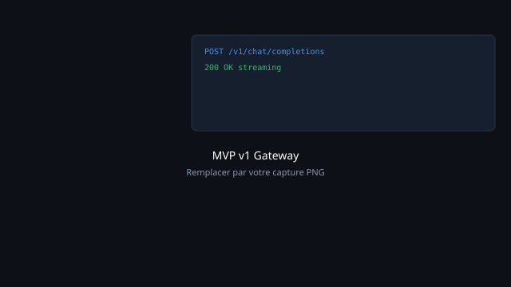
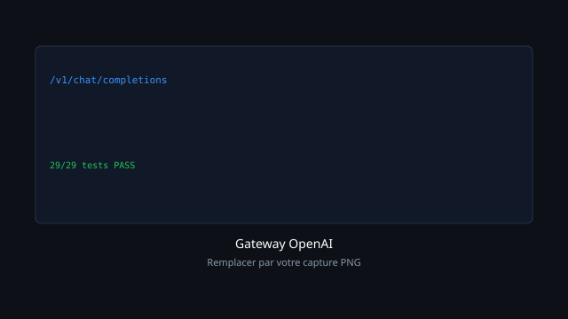
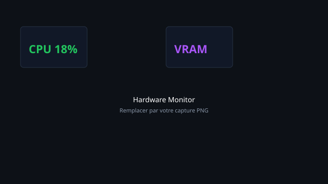
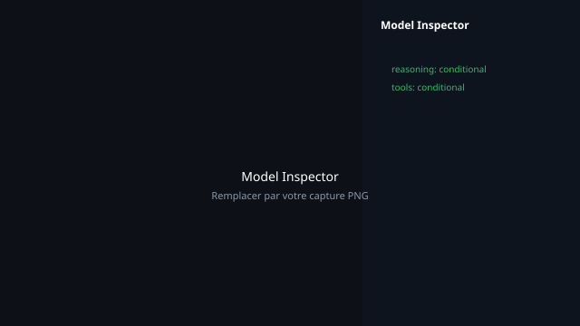

Plateforme IA locale pour développeurs
Gateway OpenAI · LLM local (Ollama) · Monitoring GPU · Cursor / VS Code / Codex · Sans dépendance cloud
Le problème
- Coûts cloud et dépendance aux API tierces pour le développement IA
- Risque de fuite de code et de données sensibles vers des serveurs externes
- Difficulté à déployer et piloter l'IA locale (LLM, vision, audio) depuis les IDE
Ce qu'on a construit
Deux MVP d'une plateforme IA souveraine : passerelle locale compatible avec les outils de développement (Cursor, Claude, VS Code, Codex), supervision matérielle, déploiement multimodal — sans exposer le code source.
- MVP v1 — Gateway locale + agents MCP + orchestration cloud hybride
- MVP v2 — Centre d'infrastructure IA : catalogue modèles, monitoring GPU, gateway unifiée
Démonstrations (GIF)

Captures d'écran




Technologies (aperçu public)
Python
FastAPI
IA locale
Ollama
HuggingFace
MCP
Monitoring GPU
Cursor / Codex
Détails d'implémentation et architecture interne : non publics.